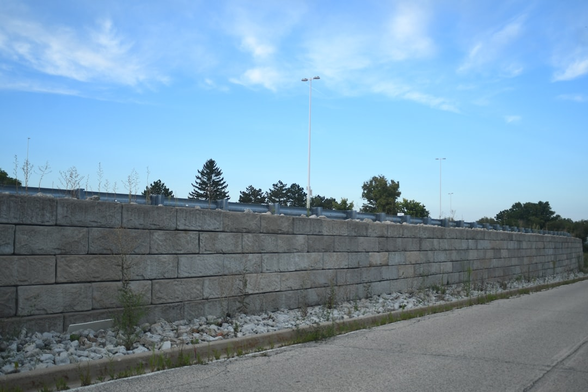

For a Perth retaining wall project, the useful first checks are retained height, ground conditions, drainage and whether approval may apply. The published guide for Perth Retaining Walls says most installed walls run about $250 to $600 per square metre of wall face, excluding GST, excavation, drainage and difficult access. It also says a building permit generally applies once a wall retains more than 0.5 metres of ground, with some lower walls still needing approval in boundary or related building situations.
For owners comparing retaining walls perth options, the practical first move is to separate site conditions, drainage and approval triggers from the headline price before choosing a wall system.
Retaining Walls Perth Explained
The guide published by Perth Retaining Walls opens with a useful distinction, Perth ground is not one problem. On the coastal sand plain, a wall may be holding a level building pad or stopping a sandy face from ravelling. In the Darling Scarp foothills, including Kalamunda and Roleystone, steeper slopes, shallow soil over rock and winter drainage can shape the job.
That is the first filter for any quote request. Note the approximate retained height, the run length, whether the wall sits near a boundary and how water moves across the area after rain. If excavation looks awkward or access is tight, include that upfront. Those details affect material choice and cost more than a generic request for a new wall.
The same guide says limestone is the material most Perth walls are built from and that it suits the sandy Swan Coastal Plain well. Useful, but not universal. A sensible quote should tie the proposed wall to the ground it will hold.
Match the wall system to the job
The source guide lists limestone, concrete post and panel, besser block, timber sleeper, rock and boulder walls, along with engineered retaining walls and retaining wall drainage. That menu is most helpful when turned into a decision path rather than a list of products.
For low garden terracing, the guide says timber sleeper works well. For taller or longer runs, it points to post and panel concrete systems. Limestone remains the common local reference where sandy ground and supply suit the block. If a contractor recommends one system quickly, ask what part of the site drove that choice, height, run, soil, drainage or access.
- Limestone: commonly used in Perth and suited to sandy Swan Coastal Plain conditions.
- Post and panel concrete: worth examining for taller or longer retaining runs.
- Timber sleeper: a practical option for low garden terracing.
- Engineered and drainage scope: relevant when the wall is more than a simple edge treatment.
Check approval before the design is locked in
The guide says that in Western Australia a retaining wall generally needs a building permit once it retains more than 0.5 metres of ground. It also says a wall of any height can still need a permit if it is tied to other building work, affects or protects adjoining land, or sits on a boundary wall or substantial dividing fence.
That makes early checking worthwhile, especially where an owner assumes a lower wall is automatically exempt. The same source refers readers to the AS 4678 design standard and the Certificate of Design Compliance, or BA3, process before quotes are sought. Even if a contractor manages that side of the job, the written scope should make clear whether design and approval documents are included, excluded or still to be confirmed.
If the wall is part of wider landscaping or building work, include that in every enquiry. It can alter the approval path and the useful sequence of design, excavation and installation.
Use the price range properly
The broad published range is about $250 to $600 per square metre of wall face installed. The guide also says those figures exclude GST, excavation, drainage and difficult access. It adds that taller engineered walls sit higher once structural design and permit costs are involved.
That means the range is best used as a screening tool, not a finished project number. A quote can look cheaper simply because drainage, spoil removal, engineering input or awkward access has been left out. Ask for those items to be separated so the comparison is based on scope, not just a total.
If the work involves replacing an older wall, ask whether removal of the existing structure is included. If the wall sits near adjoining land, ask whether that setting changes the design or approval brief. Those questions usually do more work than arguing over the first figure on the page.
Who this guide helps most
This guide is aimed at owners choosing between a low garden wall and a more structural retaining job, owners on sandy blocks comparing limestone with other systems, and owners in foothill settings where slope, rock and winter drainage shape the brief. It also suits owners replacing an older wall who need to know whether the new work changes approval or design requirements.
A strong quote request is short but specific. Send photos, estimated height and length, note any boundary context, describe visible drainage issues and ask why the proposed system suits the site. Also ask whether the written scope includes excavation, drainage and any design or approval documents that may be needed. That gives you something concrete to compare when quotes arrive.
- Record site details. Note retained height, run length, boundary context, slope and visible drainage behaviour before seeking prices.
- Ask why that system fits. Request a plain explanation of why the quoted material and wall system suit the ground and wall height.
- Confirm approval position. Check with local government whether retained height, adjoining land or related building work affects approval.
- Compare full scope. Line up quotes by separating wall system, excavation, drainage, engineering and access rather than relying on one total.
| Project setting | System often considered | What to confirm in the quote |
|---|---|---|
| Coastal sand plain, lower garden edge or level pad | Limestone or timber sleeper | Whether drainage, excavation and access sit outside the headline figure |
| Longer or taller retaining run | Concrete post and panel or another engineered option | Whether design input and approval related documents are included |
| Foothill site with slope, shallow soil over rock or winter drainage | A system matched to site conditions | Whether boundary context or related building work changes the approval path |
Common questions
Is limestone always the right material for a Perth job? No. The published guide says limestone is the material most Perth walls are built from and that it suits the sandy Swan Coastal Plain well, but it also points to post and panel systems for taller or longer runs and timber sleeper for low garden terracing. The right fit depends on the site and the wall's role.
Can a wall below 0.5 metres still need approval? Yes. The source guide says the general exemption applies only when the wall retains no more than 0.5 metres of ground and is not associated with other building work, does not affect adjoining land and is not on a boundary or dividing fence wall. Checking with local government is still sensible.
Why can two quotes for similar work land far apart? The published price guide excludes GST, excavation, drainage and difficult access. One quote may also include design or approval related items that another has not priced yet, so the totals only make sense once the scope is lined up.
This guide covers site checks, material fit, approval triggers and quote scope for Perth wall projects.